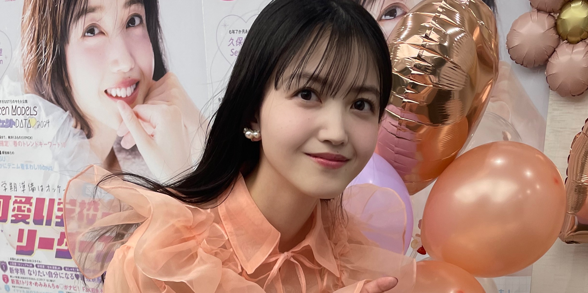

みなさまこんにちは。
久保史緒里です。☺︎

これが最後のブログになります。
Seventeenを、卒業します。
6年と7ヶ月。
本当にお世話になりました。
加入したのは16歳の時です。
きっかけはオーディションでした。
実はね。
モデルのオーディションを受けたことが
ずーっと昔むかし、ありました。
ぜんぶ書類で落ちてしまって。
遠い世界なんだなって改めて知って、その時、一度諦めがついてしまったんです。
だから正直、
Seventeenのオーディションも
ぜんぜん自信が無かった。
でも何故か、毎日鏡に向かって
『Seventeen、合格しますように。』って
唱えてたんです。
（実は乃木坂46のオーディションの時も同じことをしていたのです…）
口に出してみる。
言霊ってやっぱりあると思っていて。だから、人に言えずとも、自分にだけは言葉で夢を伝え続けようと。諦めないように、心は折れそうでも、口に出す言葉はプラスでいようと。
あれから6年と7ヶ月。
私はとってもしあわせだったと心から思います。
Seventeenという場所は私にとって、ひとつの居場所でした。
どんな自分も受け入れてくださり、あたたかく迎えてくださり、大切なおともだちもできて、尊敬する先輩も、愛おしい後輩もできて。
そんな経験を、
Seventeenを愛する貴女にもして欲しいと願います。
偶然ではありますが、私にとって最後の掲載号でミスセブンティーン2024の応募が始まりました。
ご応募お待ちしております。☺︎
いろんなことがあったなあ…
楽しかった思い出も、
踏ん張らなきゃいけなかった思い出も。
本来であれば、自信を持って撮影をしたかったし、そうあるべきだったと思うのです。
でも私は、とにかく自分に自信がありませんでした。
そうなると、どんどん良くない方向に進んでいってしまうのですよね。
夢を唱えていたはずの鏡を見るのが苦しくなって。
ただ、お家でご飯を食べているだけなのに、
涙が止まらない時もありました。
誰かが私に対して何かを思う時、常にそれを一番に自覚しているのは私で。
ならば、対策出来るのではないかと思われるけれど、そうはいかなくて。
良い方向に進んでいくためには、その分のエネルギーと心が必要だったけれど、そういう時って、それを生み出す力すらないんです。
自覚してる分、苦しかった。
そして、どうにもできなかった。
それを超えたのはいつからだろう。
今も悩みは尽きないし、
落ち込むこともあるし、
自信がない部分もある。でも、
自分の好きな部分もちゃんとある。
誰かにはなれないし、
悩んだところで悩みは消えない。
悩みを解決に導けるほどのエネルギーも持ち合わせていない。
でも、自分のどこかを好きになることはできる気がしたんです。
私は自分の内面を愛することにしました。
そうしたらね、不思議なことに、
いろんなことが良い方向に向いたのです。
今まで気になっていたことが気にならなくなったり、他者と比べなくなったり。
自分を愛することはきっと、
みんなが平等に出来ることであると思いたいし、そうであって欲しいと願っています。
寂しくなってきちゃったなあ。
私はこれから先、この場所にいたんだということに誇りを持って、読者のみなさんにまた違う場所でも見つけてもらえるように、頑張ります。
16歳だった私が、もう22歳。
まだ叶えたい夢もいっぱいあるし、
これから生まれる夢もあるだろうし、
まだまだ変化していくのだと思います。
きっと、
挫折もするし、涙も流すし、立ち止まることもある。
それでも、
今、自分として生きていることを心から幸せだと感じる瞬間が絶対に訪れる。
周りの環境や存在への愛がどんどん増してくる。素敵な出逢いがある。
だから、
私はこれから先の未来がとても楽しみです。
Seventeenモデルでいられた6年と7ヶ月。
本当に、幸せでした。
見つけてくれて、育ててくれて、愛してくれて。本当にありがとうございました。
この場所でのすべての出逢いが、私の財産であり、これから先も続いていく、大切なご縁だったと感じています。
これからも、
Seventeenのことを愛していただけたら嬉しいです。
またどこかで会いましょうね。
それまでお互い元気でいましょう。
本当に、お世話になりました。
大きな愛を込めて。
久保史緒里